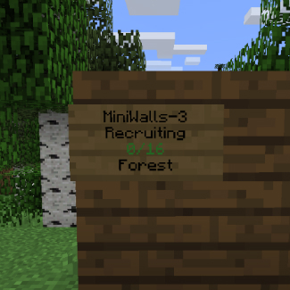
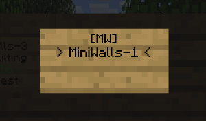

Home
Installation¶
Prerequisites¶
- Java 8 or newer
- Spigot server with Minecraft 1.8, 1.9, 1.10, 1.11, 1.12 and 1.13
- Vault
- ProtocolLib
- An economy plugin that hooks with Vault. You only need it when you want to enable economy (players receive currency for kills, can buy kits for in-game currency etc)
If you have BungeeCord or Lilypad server it’s recommended to create a separate server to run MiniWalls. If you can’t create a separate server for MiniWalls it’s not recommended to run other games on this server as they may conflict with MiniWalls.
Installing plugin¶
- Download the plugin from Spigot
- Copy plugin jar (for example MiniWalls.jar or whatever the plugin's version is) to your server plugins directory
- Start server
- Look for any errors in console. If there are any your server probably doesn't meet all the prerequisites. If you can't figure out why you're having errors and can't fix them contact me by PM on Spigot and I will help you out.
- Stop server
- Configure the config files (tutorial below) (This step is optional. If your server meets all prerequisites you are ready to use the plugin)
- Start the server and have fun!
Configuration files¶
With MiniWalls come quite a few configuration files. They are located in plugin's main directory plugins/MiniWalls.
There are 4 files in total - config.json, kits.json, maps.json and en.properties. Files ending with .json use JSON syntax and en.properties uses Java .properties syntax.
JSON¶
.properties¶
Data types
In JSON configuration files there is a data type for every configuration value. That means that each item/key needs a specific value. For example currencyPerKill in economy config needs a value which is an integer, but enabled in the same config needs a boolean value (true or false). Here is a table of all data types currently in use in config files.
| Data type | Value | Example |
|---|---|---|
| boolean | true or false | true |
| string | a sequence of characters | "hey that's a string" |
| integer | an integer | 15 |
| number | an integer or floating point number | 7.25 |
| duration | duration in milliseconds | 15000 |
| material | minecraft material name string, click here for 1.13 materials, here for 1.8-1.12. | "diamond_pickaxe" |
| chat color | minecraft color string, click here for list | "&c" |
| itemstack | Minecraft item as JSON object containing material, amount, data and unbreakable |
{"material": "wool","data": 14, "amount": 64} |
| itemstack.material | material of the itemstack | see above - material |
| itemstack.amount | integer size of itemstack (optional, default 1) | see above - integer |
| itemstack.data | integer data/durability of itemstack (optional, default 0) | see above - integer |
| itemstack.unbreakable | boolean value whether itemstack is unbreakable (optional, default false) | see above - boolean |
| location | JSON object containing x, y and z coordinates | {"x": 147, "y": 64.5, "z": -1024} |
| location.x, location.y, location.z, | number value of the coordinate | see above - number |
| cuboid | JSON object containing bounds of cuboid | {"loc1": {"x": 15, "y": 0, "z": -25.5}, "loc2": {"x": 768, "y": 25, "z": 400}} |
| cuboid.loc1, cuboid.loc2 | location of bound | see above - location |
General Config¶
General config is in config.json file and contains most of the settings of the MiniWalls plugin. Here is a table which explains what each setting there does.
| key | value type | default | explanation |
|---|---|---|---|
| general.locale | string | en.properties | file where plugin looks for translations; has to be located in plugin directory plugins/MiniWalls |
| general.balanceTeams | boolean | true | if true players can't join teams that are bigger than their current team |
| general.showServerJoinMessages | boolean | false | if false players are not informed when someone joins the server |
| general.signs | boolean | false | whether signs are enabled (see below: Signs) |
| economy.enabled | boolean | false | if true players receive currency for certain activities and can buy kits; |
| economy.currencyPerKill | integer | 10 | the amount of currency player receives when they get a kill |
| economy.currencyPerAssist | integer | 3 | the amount of currency player receives when they get a kill assist |
| economy.currencyPerWin | integer | 50 | the amount of currency player receives when they win a game |
| economy.currencyPerGame | integer | 15 | the amount of currency player receives when they finish a game |
| bungeeMode.enabled | boolean | false | if true plugin attempts to send player to bungeeMode.arena after joining and to bungeeMode.hub after player quits. |
| bungeeMode.arena | string | MiniWalls-1 | arena name where player is sent to after joining the server |
| bungeeMode.hub | string | hub | server name where player is sent to after quitting |
| data.storageType | string | file | how player data (stats, unlocked kits etc) are stored; file or mysql |
| data.mysql.host | string | localhost | mysql host |
| data.mysql.port | integer | 3306 | mysql port |
| data.mysql.username | string | root | mysql username |
| data.mysql.password | string | mysql password | |
| data.mysql.db | string | miniwalls | mysql database |
| data.file.directory | string | db | directory where player data is stored when storageType is file; it's relative to plugin directory, so for default it's plugins/MiniWalls/db |
| arena | arena config | See Arenas | |
| teams | array of teams | See more information about that in Teams | |
| arenas | array of arenas | See Arenas |
Arenas¶
Each arena is a Mini Walls game to where players can connect. Every arena has its own players, world etc. Arenas are configured in main config file config.json. They are set in an array arenas.
Every JSON object in arenas contains a setting name. The data type of this setting is string.
name is the only setting you need to set for every arena. For example arena JSON object can look like {"name": "MyAwesomeArena"}
Settings
By default, settings for the arena are taken from default config that can be configured in the same file (config.json). Default arena config is an object named arena. It needs to contain all of the settings in the table below.
You can also set custom settings for each arena by adding a new object config to arena object. This object can contain settings of the following table. Custom settings override default settings.
For example, in an example below, arena MiniWalls-2 always has a startDelay 33333, no matter what it's in default config. However, this only applies to arena MiniWalls-2, all other arenas that don't have startDelay, have a default value.
{ "name": "MiniWalls-2", "config": { "startDelay": 33333 } }
Arena Settings
| key | value type | default | explanation |
|---|---|---|---|
| startDelay | duration | 45000 | duration after game starts when arena has atleast players specified in minPlayers |
| serverFullStartDelay | duration | 10000 | duration after game starts when arena is full |
| wallsTime | duration | 15000 | duration after walls drop |
| deathmatchTime | duration | 180000 | duration after deathmatch begins since start of the game |
| shrinkTime | duration | 200000 | duration after map starts to shrink since start of the game |
| maxTime | duration | 300000 | max duration that game can last |
| minPlayers | integer | 8 | minimum amount of players with what game can begin |
| maxPlayers | integer | 16 | maximum amount of players |
| maxSpectators | integer | 24 | maximum amount of spectators |
| maps | array of strings | forest, volcano | names of maps that are in arena |
Storage¶
By default Mini Walls stores players' data (stats and unlocked kits) in directory plugins/MiniWalls/db. You can change the storage type in the general config (see above - General config).
Warning
If you change the storage type, data from the previous type isn't migrated to a new one. It means that you lose all the data when you change the storage type.
Teams¶
Teams are configured in config.json file. They are set in an array teams that contains team JSON objects. Below is an explanation of the team JSON object.
| key | value type | explanation |
|---|---|---|
| name | string | name of the team; this needs to match the wither name in map config (See Maps) |
| displayName | string | name that is displayed to players |
| color | chat color | color of the team; in that color is sometimes the displayName; on that depends the armor and wool color |
Kits¶
All Mini Walls players have a kit. Each kit is sort of a "custom skill". With every kit come items that player gets every time he or she spawns or continuously. Kits are configured in kits.json file. That files contains an array of kit JSON objects. Here is a specification of kit JSON item.
| key | value type | explanation | default |
|---|---|---|---|
| name | string | kit name | |
| displayName | string | name that is displayed to players | |
| default | boolean | if true this kit is equipped when player joins the arena | false |
| price | integer | price of this kit, if bigger than 0 players need to buy it using in-game currency in order to use it | 0 |
| permission | string | permission players need to use the kit | none |
| item | material | material of item that is shown in inventory kit selector | |
| items | array of kititems |
list of items that are supplied to player | |
| kititem.supplyType | string | when this item is supplied, once when it's supplied on spawn, armor when it's supplied as armor on spawn, continuous if item is supplied after delay |
|
| kititem.item | itemstack | minecraft item that is supplied | |
| kititem.delay | duration | if supplyType is continuous, delay between giving item to player |
|
| kititem.maxAmount | integer | if supplyType is continuous, amount that player can maximally have in inventory, use -1 to set no limit |
-1 |
Maps¶
Every Mini Walls game takes place in a map. Maps are configured in maps.json file. That file contains an array of map JSON objects. Here is a specification for this object.
| key | value type | explanation |
|---|---|---|
| name | string | unique name for each map; this name is used to configure arena maps |
| displayName | string | name that is shown to players |
| border | cuboid | area where the game takes place; players can't go outside of it; |
| lobbyArea | cuboid | area of the map that is lobby; it's a place where players are before the game starts; players can't go outside of it; it's removed when the game starts |
| lobbySpawn | location | where players are teleported when they join an arena |
| withers | object containing team name as key |
spawn points for withers, every key in that object has to match team's name |
| walls | array of cuboids | area where walls are; when walls drop all blocks in these cuboids are removed |
Configuring a new map in-game¶
Building your map
The first thing you need to do is actually build your map. You can do it in Minecraft singleplayer or in any server you have access to. Be sure that your map has the following elements that Mini Walls needs:
-
walls that separate the teams.
-
place for each wither (there are 4 withers by default)
-
a lobby area that players spawn in before the game begins; it disappears when the game begins
Copying the files
The next step is to copy the map that you have built to the Mini Walls server. Copy the whole folder and place it in plugins/MiniWalls directory.
Note
This name is not shown to players and is used only when configuring the plugin.
Starting the setup
If you haven't already, start your Mini Walls server and join the game. Make sure that you have walls.admin.map-setup permission.
Use /mw ms create yourMapName command in-game to start the setup. Replace yourMapName with the name that you set earlier, for example if your directory name was map-sandcastle, the command should /mw ms create sandcastle.
After that you should get a message on how to teleport to the setup world. Use the given command to teleport to setup world. Usually it is something like /mw ms tp MwSetup-mapName-1.
Setting the display name
Display name is the name of the map that is shown to players. To change it, use the following command while in setup world: /mw ms display_name MapName.
Setting the lobby spawn
Players that join the game are automatically teleported to lobby spawn location. This location can be changed using /mw ms lobby_spawn command. This command changes the lobby spawn location to your current location.
Setting the lobby area
The area that players can be in before the game starts, can be set using command /mw ms lobby_area. After entering the command, left click the boundaries of the lobby area. Selecting the area works the same as WorldEdit's, but it doesn't matter which item you click with. More information on WorldEdit selection can be found at http://wiki.sk89q.com/wiki/WorldEdit/Selection#Selecting_cuboids.
Note
After the game starts, all blocks in lobby area are replaced with air.
Setting the spectator spawn
When players die or join during the game, they are first teleported to the spectator spawn location. This location can be changed with /mw ms spectator_spawn. This command changes the spectator spawn location to your current location.
Setting the border
Players can't move outside the map border. The area that players can be in, can be set using command /mw ms border. It uses the same selection method as previously explained lobby area command.
Adding walls
To add new walls, use /mw ms wall add command and select the boundaries of the wall. You can see the list of set walls with /mw ms wall list and remove walls with /mw ms wall remove wallIndex, where wall index is the index that is shown in list command.
Setting wither locations
To set wither's location, use /mw ms wither someTeam command. It sets the spawn location of someTeam's wither to your current location. For example, to set the spawnpoint of the green team, use /mw ms wither green.
Finishing the setup
To finish the setup, use command /mw ms finish. After that, you're ready to use your new map.
To add it to default map pool, make the following change in your config.json file. Replace
"maps": [ "forest", "volcano" ]
with
"maps": [ "forest", "volcano", "sandcastle" ]
sandcastle is the name that you set at the beginning to the folder.
You need to restart the server for changes to apply.
Language¶
You can change almost all messages Mini Walls sends to players. By default messages are in en.properties, however, this can be changed in the main config file (see general config).
Signs¶
You can create signs for arenas that can be used to join the arena.
Here is an example of a sign

As you can see,
- the first line shows the arena's name
- the second shows arena's state, for example Recruiting or In Game (Recruiting = Waiting for Players)
- the third shows player count in the arena; it's green when there is room in arena and arena is in lobby
- the fourth shows arena's map
Creating a sign¶
Creating such a sign is quite simple. All you need to do is set signs to true in general config and put down a sign with the following format:
- [MW]
- Arena name (for example MiniWalls-1)
- (empty)
- (empty)
Here is an example:

Note
You need to have a permission to create a sign. See Permissions
Commands¶
| command | explanation | permission |
|---|---|---|
| /mw join [arena] | Join an arena or open arena joining GUI | - |
| /mw leave | Leave from arena | - |
| /mw arena [player] | See the arena of specified player. If not set, shows sender's arena | - |
| /mw start [arena] | Starts the game in the specified arena. If not set, starts the game in sender's arena | walls.admin.start |
| /mw stop [arena] [winner team] | Stops the game in a specified arena with the specified winner. If an arena is not set, sender's arena is used. If winner team is not set, the biggest team is used. | walls.admin.stop |
| /mw team [player] | Changes team for given player or sender's if not set. | walls.admin.team |
| /mw ms | Configure new maps in game. (See Configuring a new map in-game) | walls.admin.map-setup |
Permissions¶
| permission | explanation |
|---|---|
| walls.join-full-game | lets player join an arena even if it's full |
| walls.admin.create-sign | lets player create signs |
| walls.admin.map-setup | allows player to create new maps in game |
Updating to Minecraft 1.13¶
Mini Walls versions 1.2.1 and higher support Minecraft 1.13. To update, do the following:
- Download the plugin jar for 1.13 Spigot and put it in your plugins directory. Note that there is a separate jar for 1.13 and 1.8-1.12. You can find the download for 1.13 on plugin's Spigot page.
- Since chunk storage changed since 1.12, you need to update world data for maps made in 1.12 or lower version. To do that, copy each of your maps to your Minecraft saves directory and open the world once in singleplayer with Minecraft 1.13. After you've done that, move the worlds back to the plugin directory. You don't need to update default maps volcano and forest!
- Delete default maps (directories
map-volcanoandmap-forest). The plugin automatically downloads them for 1.13 when the server starts. -
Some item names were changed in Minecraft 1.13. If you have some of those in your kits configuration, update them. If you are using default config, delete
kits.jsonfile and a new configuration for 1.13 is generated when server starts.Here is a summary of the changes.
old name (1.12 and lower) new name (1.13) wool white_wool wood_pickaxe wooden_pickaxe wood_spade wooden_shovel wood_axe wooden_axe wood_sword wooden_sword gold_spade golden_shovel gold_axe golden_axe gold_sword golden_sword gold_helmet golden_helmet gold_chestplate golden_chestplate gold_leggings golden_leggings gold_boots golden_boots